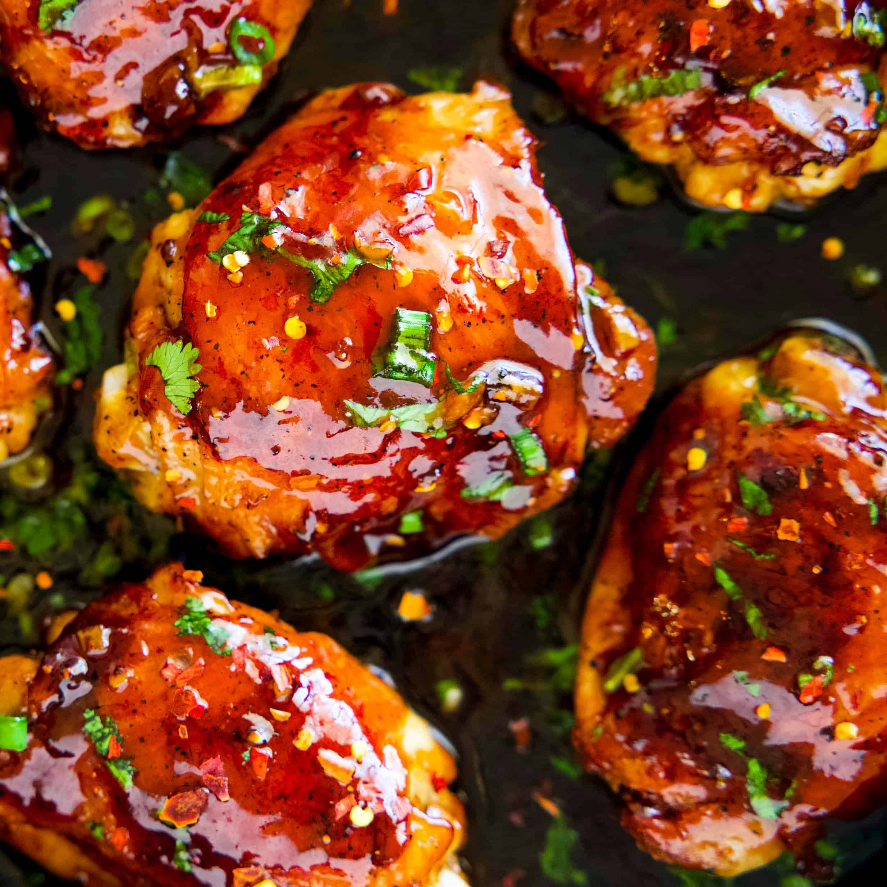

Honey Garlic Chicken Thighs

Description
Honey Garlic Chicken Thighs are the perfect balance of sweet, savory, and slightly
sticky goodness. Juicy chicken thighs are seared until golden brown, then
coated in a rich honey-garlic sauce made with fresh garlic, soy sauce,
and a touch of honey for natural sweetness. As the sauce simmers, it
thickens into a glossy glaze that clings to every bite, delivering
bold flavor with minimal effort.
This recipe is simple enough for a quick weeknight dinner but flavorful enough
to impress guests. Serve it over rice to soak up the extra sauce, alongside roasted
vegetables, or with a fresh salad for a complete meal. With just a handful of ingredients
and one pan, it’s an easy go-to recipe that never disappoints.
Ingredients
- 8 (5 ounce) boneless chicken thighs
- salt and ground black pepper to taste
- 2 tablespoons olive oil, or as needed
- ½ medium onion, finely chopped
- 7 cloves garlic, chopped or to taste
- 1 cup honey
- ½ cup soy sauce
- 1 pinch onion powder, or to taste
- 1 pinch garlic powder, or to taste
- ¼ cup chopped fresh cilantro
Steps
- Gather all ingredients.
- Season chicken on both sides with salt and pepper.
- Heat olive oil in a cast iron skillet over medium-high heat. Add chicken and brown on one side, 3 to 5 minutes.
- Flip chicken and add onion and garlic; continue to cook until chicken is mostly (but not fully) cooked and onion and garlic are soft, 5 to 7 minutes more. Remove chicken to a plate.
- Add honey, soy sauce, onion powder, and garlic powder to the skillet. Stir and scrape the bottom of the pan with a wooden spoon to get garlic and onion to mix with the liquid.
- Return chicken to the skillet, cover, and reduce heat to medium. Cook until no longer pink in the center and juices run clear, about 10 more minutes, turning once halfway through. An instant-read thermometer inserted into the center of a thigh should read at least 165 degrees F (74 degrees C).
- Arrange chicken on a serving plate and drizzle liquid from the pan on top. Sprinkle with cilantro to serve.
- Enjoy!
Home